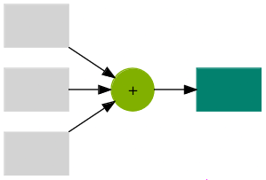
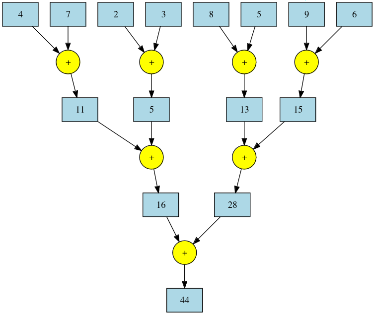
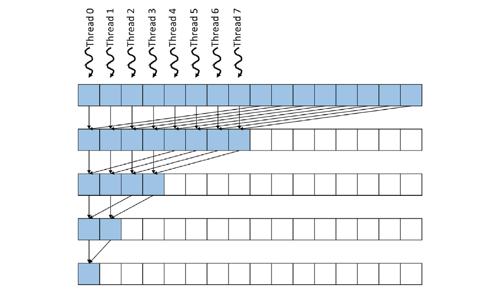
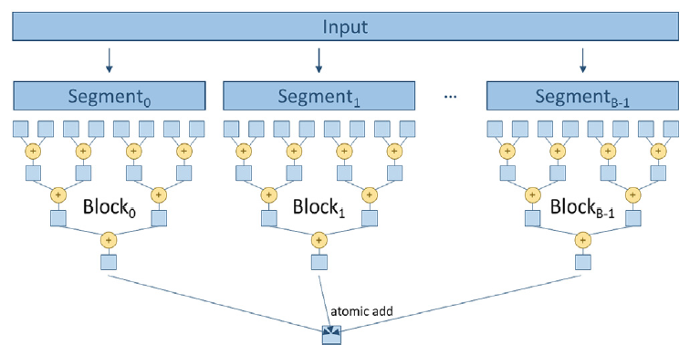
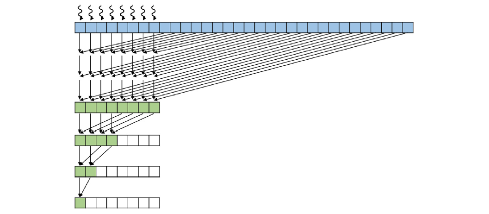

GPU MODE Lecture 9: Reductions
- GPU MODE Lecture Notes: My notes from the GPU MODE reading group lectures run by Andreas Kopf and Mark Saroufim.
- Introduction
- Examples of Reductions
- Reductions in Machine Learning
- Implementing Reductions in PyTorch
- Serial Reduction
- Parallel Reduction Algorithm
- Non-Determinism in Floating-Point Reductions
- Implementing Parallel Reduction in CUDA
- Reductions in Machine Learning Frameworks
- Conclusion
- Call to Action
- YouTube Recording: Lecture 9: Reductions
- Slides: Lecture 9: Reductions
- Code: lecture_009
- Lightning AI Studio: CUDA Mode Lectures
# Allow access for any user (restart required)
echo 'options nvidia NVreg_RestrictProfilingToAdminUsers=0' | sudo tee /etc/modprobe.d/ncu-permissions.confIntroduction
This lecture covers reductions, a core concept in GPU programming and machine learning.
Previous lectures (1-8) provided the foundational knowledge to author, integrate, profile, and ship CUDA/Triton kernels in PyTorch.
This lecture aligns with Chapter 10 of the PMPP book and includes example kernels available on GitHub.
Reductions are mathematical operations that reduce the size of input data, often producing a scalar from a vector in machine learning.

Sum Reduction
Examples of Reductions
def reduce(data, identity, op):
result = identity
for element in data:
result = op(result, element)
return result
data = [1, 2, 3, 4, 5]- Sum:
Iteratively adds elements of a list.
Identity element: 0 (for an empty list).
Example:
# Summation print(reduce(data, 0, lambda a, b: a + b)) # Output: 15
- Product:
Iteratively multiplies elements of a list.
Identity element: 1 (for an empty list).
Example:
# Product print(reduce(data, 1, lambda a, b: a * b)) # Output: 120
- Min/Max:
Finds the minimum/maximum element in a list.
Identity element:
float('-inf')/float('inf')(for an empty list).# Maximum print(reduce(data, float('-inf'), max)) # Output: 5 # Minimum print(reduce(data, float('inf'), min)) # Output: 1
- Other common reductions: argmax, argmin, norm, mean, number of unique elements.
Reductions in Machine Learning
- Ubiquitous in machine learning code:
- Convolutional Neural Networks (CNNs): Mean/max pooling.
- Classification: Argmax over probabilities.
- Loss calculations: Scalar loss computed from target and prediction.
- Softmax normalization: Summation of exponentiated elements.
Implementing Reductions in PyTorch
- Reduction Implementations: aten/src/ATen/native/cuda/ReduceOps.cpp
- PyTorch provides built-in functions for common reductions (e.g.,
torch.max,torch.min,torch.mean). - These functions call optimized CUDA kernels when tensors are on a CUDA device.
Serial Reduction
Serial reduction is a basic approach where a single thread iterates through the input data and updates the result sequentially.
Example: Finding the maximum element in a list by iterating and comparing each element to the current maximum.
+----------------------+ | Initial Vector | +----------------------+ | 5 | 2 | 8 | 1 | +----------------------+ | v +----------------------+ | Iteration 1 | +----------------------+ | 5 | | | | +----------------------+ | v +----------------------+ | Iteration 2 | +----------------------+ | 5 | 5 | | | +----------------------+ | v +----------------------+ | Iteration 3 | +----------------------+ | 5 | 5 | 8 | | +----------------------+ | v +----------------------+ | Iteration 4 | +----------------------+ | 5 | 5 | 8 | 8 | +----------------------+Inefficient for parallel architectures like GPUs.
Parallel Reduction Algorithm
Linked Video: 05 Atomics Reductions Warp Shuffle
Foundation for efficient GPU reduction implementations.
Key Idea: Divide the input data into pairs, assign a thread to each pair, and have each thread perform the reduction operation on its pair.
Iterative Process: Repeat the process on the reduced results until a single result remains.
Max Reduction Visualization:
+-----------------------------------------------------------------------+ | Initial Vector | +-----------------------------------------------------------------------+ | 5 | 2 | 8 | 1 | 1 | 9 | 3 | 7 | 7 | 4 | 6 | 0 | +-----------------------------------------------------------------------+ | v +-----------------------------------------------------------------------+ | Reduction Step 1 | +-----------------------------------------------------------------------+ | 5 | 8 | 9 | 7 | 6 | +-----------------------------------------------------------------------+ | v +-----------------------------------------------------------------------+ | Reduction Step 2 | +-----------------------------------------------------------------------+ | 8 | 9 | 7 | +-----------------------------------------------------------------------+ | v +-----------------------------------------------------------------------+ | Reduction Step 3 | +-----------------------------------------------------------------------+ | 9 | 9 | +-----------------------------------------------------------------------+ | v +-----------------------------------------------------------------------+ | Final Reduction Step | +-----------------------------------------------------------------------+ | 9 | +-----------------------------------------------------------------------+Sum Reduction Tree: Visualizes the parallel reduction process as a tree, where each level represents a reduction step.

Parallel Sum Reduction Tree Logarithmic Complexity: Requires
log nsteps for an input of sizen.
Non-Determinism in Floating-Point Reductions
Floating-point operations are non-commutative, meaning
a + bmay not equalb + a.Parallel reductions can introduce non-determinism due to:
- Weak memory consistency on GPUs: Different threads may execute operations in unpredictable order.
- Order of operations within threads: The order in which a thread performs operations can affect the result.
Deterministic algorithms can be enforced in PyTorch using
torch.use_deterministic_algorithms(True), but this can impact performance.Example: Summing a list with many small numbers and a few large numbers can produce different results depending on the order of operations.
# We'll use several small numbers that, when added together first, could show a difference numbers = [1e-20] * 10 + [1e20, -1e20] # 10 small numbers followed by a large positive and negative number # Sum the list from left to right sum_left_to_right_adjusted = sum(numbers) # Sum the list from right to left sum_right_to_left_adjusted = sum(reversed(numbers)) # 0.0 9.999999999999997e-20 print(f"sum_left_to_right_adjusted: {sum_left_to_right_adjusted}") print(f"sum_right_to_left_adjusted: {sum_right_to_left_adjusted}")sum_left_to_right_adjusted: 0.0 sum_right_to_left_adjusted: 9.999999999999997e-20Accuracy Implications: Accumulating many small values in low-precision floating-point formats (e.g., float16) can lead to loss of precision.
import torch large_value = torch.tensor([1000.0], dtype=torch.float32) # Using float32 for initial value # Define a smaller value that is significant for float32 but not for float16 small_value = torch.tensor([1e-3], dtype=torch.float32) # Small value in float32 # Add small value to large value in float32 result_float32 = large_value + small_value # Convert large value to float16 and add the small value (also converted to float16) result_float16 = large_value.to(torch.float16) + small_value.to(torch.float16) # Convert results back to float32 for accurate comparison result_float32 = result_float32.item() result_float16_converted = result_float16.to(torch.float32).item() # Print results # 1000.0009765625 1000.0 print(f"result_float32: {result_float32}") print(f"result_float16_converted: {result_float16_converted}")result_float32: 1000.0009765625 result_float16_converted: 1000.0Solutions:
- Use higher-precision formats (e.g., bfloat16) for accumulation.
- Upcast the accumulator to a higher precision (e.g., float32) during the reduction.
Implementing Parallel Reduction in CUDA
Naive Approach: Simple Reduce
Thread Strategy: One thread per pair of elements.
Implementation:
// Include necessary header files #include <iostream> // For standard input/output functions #include <cuda.h> // For CUDA functions and data types /* * CUDA kernel function to perform sum reduction on an array of floats. * * The kernel reduces the input array 'input' to a single sum and stores the result in 'output'. * The reduction is performed in parallel using a binary tree reduction pattern. * * Key concepts: * - Each thread in a block processes elements of the array. * - The number of active threads decreases by half in each iteration. * - Synchronization is required between iterations to ensure correct results. * * CUDA-specific keywords: * - __global__: Indicates a function that runs on the device (GPU) and is called from the host (CPU). * - threadIdx.x: The thread's index within its block in the x-dimension. * - blockDim.x: The number of threads in a block in the x-dimension. * - __syncthreads(): A barrier synchronization function that waits until all threads in the block reach this point. */ __global__ void SimpleSumReductionKernel(float* input, float* output) { // Calculate the index for each thread. // Each thread handles two elements starting at index 'i'. unsigned int i = 2 * threadIdx.x; // Start the reduction loop. // 'stride' controls the distance between elements to be added. for (unsigned int stride = 1; stride <= blockDim.x; stride *= 2) { // Only threads where threadIdx.x is a multiple of 'stride' participate. if (threadIdx.x % stride == 0) { // Add the element at 'i + stride' to the element at 'i'. input[i] += input[i + stride]; } // Synchronize threads to ensure all additions are completed before the next iteration. __syncthreads(); } // After the reduction, the total sum is stored in input[0]. // Thread 0 writes the result to the output variable. if (threadIdx.x == 0) { *output = input[0]; } } int main() { // Define the size of the input array. const int size = 2048; // Calculate the total bytes needed for the input array. const int bytes = size * sizeof(float); // Allocate memory on the host (CPU) for input array and output variable. float* h_input = new float[size]; // Host input array float* h_output = new float; // Host output variable // Initialize the input array on the host. // For simplicity, set all elements to 1.0f. for (int i = 0; i < size; i++) { h_input[i] = 1.0f; // Initialize each element to 1 } // Declare pointers for device (GPU) memory. float* d_input; // Device input array float* d_output; // Device output variable // Allocate memory on the device for input array and output variable. cudaMalloc(&d_input, bytes); // Allocate memory for input array cudaMalloc(&d_output, sizeof(float)); // Allocate memory for output variable // Copy the input data from host memory to device memory. cudaMemcpy(d_input, h_input, bytes, cudaMemcpyHostToDevice); // Determine the number of threads per block. // Since each thread handles two elements, we use half the size of the input array. int threadsPerBlock = size / 2; // Launch the reduction kernel on the device. // The kernel configuration <<<1, threadsPerBlock>>> means: // - 1 block // - 'threadsPerBlock' threads per block SimpleSumReductionKernel<<<1, threadsPerBlock>>>(d_input, d_output); // Copy the result from device memory back to host memory. cudaMemcpy(h_output, d_output, sizeof(float), cudaMemcpyDeviceToHost); // Print the result to the console. std::cout << "Sum is " << *h_output << std::endl; // Free the allocated memory on the host. delete[] h_input; // Free host input array delete h_output; // Free host output variable // Free the allocated memory on the device. cudaFree(d_input); // Free device input array cudaFree(d_output); // Free device output variable return 0; // Return success }- Threads with even indices are active.
- Stride starts at 1 and doubles at each iteration.
- Each thread adds its current element and the element at
stridedistance.
Issues:
- High thread divergence: Many threads become inactive as the reduction progresses.
- Poor memory access patterns: Threads access data with increasing strides, leading to poor cache utilization.
Benchmark:
# Create a binary called sum nvcc -o sum simple_reduce.cu # Run the binary ncu --set full sumResults (RTX 4090):
Sum is 2048Metric Name Metric Unit Metric Value Branch Instructions Ratio % 0.12 Branch Instructions inst 1,312 Branch Efficiency % 74.05 Avg. Divergent Branches 0.37
Minimizing Control Divergence: Control Divergence Reduction
Thread Strategy: Threads are co-located, with stride starting at block dimension and halving at each iteration.

Figure 10.8 Implementation:
#include <iostream> // Include input/output stream library #include <cuda.h> // Include CUDA runtime API // CUDA kernel function to perform parallel reduction (sum of array elements) // This kernel adds elements in the input array in parallel to compute the total sum. // It uses a tree-based reduction pattern to sum the elements efficiently. __global__ void FixDivergenceKernel(float* input, float* output) { unsigned int i = threadIdx.x; // Each thread handles one element of the input array. // Iteratively reduce the array elements. // At each step, 'stride' determines the distance between elements to be added. for (unsigned int stride = blockDim.x; stride >= 1; stride /= 2) { // Ensure that threads with index less than 'stride' perform the computation. if (threadIdx.x < stride) { // Add the element from the distant index (i + stride) to the current index (i). input[i] += input[i + stride]; } // Synchronize threads to ensure all additions are completed before the next iteration. __syncthreads(); } // After the reduction, the first thread (threadIdx.x == 0) has the total sum in input[0]. if (threadIdx.x == 0) { *output = input[0]; // Write the result to the output variable. } } int main() { // Size of the input data (number of elements in the array). const int size = 2048; // Total size in bytes of the input data. const int bytes = size * sizeof(float); // Allocate memory for input and output on the host (CPU). float* h_input = new float[size]; // Host input array. float* h_output = new float; // Host output variable to store the result. // Initialize input data on the host. for (int i = 0; i < size; i++) { h_input[i] = 1.0f; // Example initialization: set all elements to 1. } // Allocate memory for input and output on the device (GPU). float* d_input; // Device input array. float* d_output; // Device output variable. cudaMalloc(&d_input, bytes); // Allocate memory for input array on device. cudaMalloc(&d_output, sizeof(float)); // Allocate memory for output variable on device. // Copy input data from host to device. cudaMemcpy(d_input, h_input, bytes, cudaMemcpyHostToDevice); // Determine the number of threads per block. int threadsPerBlock = size / 2; // Launch half as many threads as the input size. // Launch the kernel function on the GPU. // The syntax is <<<number of blocks, threads per block>>> // We use 1 block and 'threadsPerBlock' threads. FixDivergenceKernel<<<1, threadsPerBlock>>>(d_input, d_output); // Copy the result back from device to host. cudaMemcpy(h_output, d_output, sizeof(float), cudaMemcpyDeviceToHost); // Print the result. std::cout << "Sum is " << *h_output << std::endl; // Expected output: Sum is 2048 // Clean up and free allocated memory. delete[] h_input; // Free host input array. delete h_output; // Free host output variable. cudaFree(d_input); // Free device input array. cudaFree(d_output); // Free device output variable. return 0; }- All threads are initially active.
- Stride starts at block dimension and is halved at each iteration.
- Each thread adds its current element and the element at
stridedistance.
Benefits:
- Reduced thread divergence: Threads remain active for longer.
- Improved memory access patterns: Threads access contiguous chunks of memory, improving cache utilization.
Benchmark:
# Create a binary called sum nvcc -o sum control_divergence_reduce.cu # Run the binary ncu --set full sumResults (RTX 4090):
Sum is 2048Metric Name Metric Unit Metric Value DRAM Frequency Ghz 10.28 SM Frequency Ghz 2.19 Elapsed Cycles cycle 6,299 Memory Throughput % 0.68 DRAM Throughput % 0.39 Duration us 2.88 L1/TEX Cache Throughput % 30.49 L2 Cache Throughput % 0.68 SM Active Cycles cycle 29.80 Compute (SM) Throughput % 0.12 Metric Name Metric Unit Metric Value Branch Instructions Ratio % 0.31 Branch Instructions inst 1,126 Branch Efficiency % 99.32 Avg. Divergent Branches 0.01
Segmented Multi-Block Reduction: Segmented Reduce
Thread Strategy: Uses multiple blocks to handle larger inputs. Each block performs a reduction on a segment of the input

Figure 10.12 Implementation:
/* * This program demonstrates how to perform a parallel reduction (sum) of an array using CUDA. * It sums up all elements of an input array using multiple threads and blocks on the GPU. * Each block computes a partial sum using shared memory and then adds it to a global output variable. */ #include <iostream> // Include standard input/output stream library #include <cuda.h> // Include CUDA library for GPU programming #define BLOCK_DIM 1024 // Define the number of threads per block /** * CUDA kernel function to perform parallel reduction (sum) of an input array. * Each block reduces its portion of the array using shared memory, and the result is accumulated * into a single output variable using atomic addition. * * @param input Pointer to input array in device memory * @param output Pointer to output variable in device memory (the result of reduction) * @param n Size of the input array */ __global__ void SharedMemoryReduction(float* input, float* output, int n) { // Declare shared memory array for this block __shared__ float input_s[BLOCK_DIM]; // Compute global index for this thread unsigned int idx = blockIdx.x * blockDim.x + threadIdx.x; // Global index // Thread index within the block unsigned int t = threadIdx.x; // Each thread loads one element from global memory to shared memory if (idx < n) { input_s[t] = input[idx]; // Load element from global memory } else { input_s[t] = 0.0f; // If index exceeds array size, initialize to zero } __syncthreads(); // Ensure all threads have loaded their data // Perform tree-based reduction in shared memory for (unsigned int stride = blockDim.x / 2; stride > 0; stride >>= 1) { // At each step, the stride halves, combining pairs of elements if (t < stride && idx + stride < n) { input_s[t] += input_s[t + stride]; // Add the element with its pair } __syncthreads(); // Synchronize threads before next iteration } // After reduction, the first thread of each block contains the block's partial sum if (t == 0) { // Atomically add block's partial sum to global output variable atomicAdd(output, input_s[0]); } } int main() { // Define the size of the input data const int size = 100000; // Total number of elements in the array const int bytes = size * sizeof(float); // Total size in bytes of the array // Allocate memory on host (CPU) float* h_input = new float[size]; // Host input array float* h_output = new float; // Host output variable // Initialize input data on host for (int i = 0; i < size; i++) { h_input[i] = 1.0f; // Example: Initialize all elements to 1 } // Since we initialized all elements to 1.0f, the expected sum is equal to 'size' // Allocate memory on device (GPU) float* d_input; // Device input array float* d_output; // Device output variable cudaMalloc(&d_input, bytes); // Allocate device memory for input array cudaMalloc(&d_output, sizeof(float)); // Allocate device memory for output variable // Initialize output variable on device to zero float zero = 0.0f; cudaMemcpy(d_output, &zero, sizeof(float), cudaMemcpyHostToDevice); // Copy input data from host to device cudaMemcpy(d_input, h_input, bytes, cudaMemcpyHostToDevice); // Determine the number of blocks needed int numBlocks = (size + BLOCK_DIM - 1) / BLOCK_DIM; // Calculate number of blocks // Launch the kernel on the device SharedMemoryReduction<<<numBlocks, BLOCK_DIM>>>(d_input, d_output, size); // Copy the result from device back to host cudaMemcpy(h_output, d_output, sizeof(float), cudaMemcpyDeviceToHost); // Print the result std::cout << "Sum is " << *h_output << std::endl; // Free host and device memory delete[] h_input; // Free host input array delete h_output; // Free host output variable cudaFree(d_input); // Free device input array cudaFree(d_output); // Free device output variable return 0; }- Each block copies its segment of the input to shared memory.
- Reduction is performed in shared memory within each block.
- Each block writes its partial result to global memory using atomic operations.
- A final reduction is performed on the partial results in global memory.
Benefits:
- Handles larger inputs: Shared memory limitations are overcome by using multiple blocks.
- Improved parallelism: Multiple blocks can execute concurrently.
Benchmark:
# Create a binary called sum nvcc -o sum segment_reduce.cu # Run the binary ncu --set full sumResults (RTX 4090):
Sum is 100000
Thread Coarsening: Reduced Coarsening
Thread Strategy: Each thread reduces multiple elements before synchronizing with other threads.

Figure 10.14 Implementation:
#include <iostream> #include <cuda.h> // Include CUDA header for CUDA runtime functions // Define the number of threads per block (maximum is 1024 for most GPUs) #define BLOCK_DIM 1024 // Define the coarsening factor (number of elements each thread will process) #define COARSE_FACTOR 2 /** * CUDA kernel function that performs parallel reduction (summing up an array of floats) * using thread coarsening to have each thread process multiple elements, * and using shared memory for efficient intra-block reduction. * * @param input Pointer to the input array in device memory * @param output Pointer to the output value in device memory * @param size The size of the input array */ __global__ void CoarsenedReduction(float* input, float* output, int size) { // Allocate shared memory for partial sums within a block __shared__ float input_s[BLOCK_DIM]; // Compute the global index for each thread, adjusted for coarsening unsigned int i = blockIdx.x * blockDim.x * COARSE_FACTOR + threadIdx.x; // Thread index within the block unsigned int t = threadIdx.x; // Initialize a local sum for this thread float sum = 0.0f; // Each thread processes COARSE_FACTOR elements for (unsigned int tile = 0; tile < COARSE_FACTOR; ++tile) { unsigned int index = i + tile * blockDim.x; // Compute the index for the current element // Check if index is within bounds if (index < size) { sum += input[index]; // Accumulate the sum } } // Store the partial sum in shared memory input_s[t] = sum; // Synchronize threads within the block to ensure all partial sums are stored __syncthreads(); // Perform reduction within the block using shared memory for (unsigned int stride = blockDim.x / 2; stride > 0; stride >>= 1) { if (t < stride) { input_s[t] += input_s[t + stride]; // Accumulate sums from higher threads } // Synchronize after each reduction step __syncthreads(); } // Thread 0 in each block adds the block's result to the global output atomically if (t == 0) { atomicAdd(output, input_s[0]); } } int main() { // Total number of elements to sum const int size = 10000; // Total size in bytes for the input array const int bytes = size * sizeof(float); // Allocate memory on the host (CPU) for input data and output result float* h_input = new float[size]; // Input array float* h_output = new float; // Output value // Initialize input data on the host (e.g., set all elements to 1.0f) for (int i = 0; i < size; i++) { h_input[i] = 1.0f; // Example initialization } // Allocate memory on the device (GPU) for input data and output result float* d_input; float* d_output; cudaMalloc(&d_input, bytes); // Allocate device memory for input cudaMalloc(&d_output, sizeof(float)); // Allocate device memory for output // Copy input data from host to device cudaMemcpy(d_input, h_input, bytes, cudaMemcpyHostToDevice); // Initialize output on the device to 0 cudaMemset(d_output, 0, sizeof(float)); // Calculate the number of blocks needed, considering coarsening int numBlocks = (size + BLOCK_DIM * COARSE_FACTOR - 1) / (BLOCK_DIM * COARSE_FACTOR); // Launch the kernel with the calculated number of blocks and threads per block CoarsenedReduction<<<numBlocks, BLOCK_DIM>>>(d_input, d_output, size); // Copy the result from device back to host cudaMemcpy(h_output, d_output, sizeof(float), cudaMemcpyDeviceToHost); // Print the final result std::cout << "Sum is " << *h_output << std::endl; // Free allocated memory on the host delete[] h_input; delete h_output; // Free allocated memory on the device cudaFree(d_input); cudaFree(d_output); return 0; }- Threads reduce multiple elements within their assigned segment.
- Reduction is then performed within blocks and finally across blocks, similar to the segmented reduction.
Benefits:
- Reduced synchronization overhead: Threads synchronize less frequently.
- Improved memory access patterns: Threads access contiguous chunks of memory during the initial reduction.
Benchmark:
# Create a binary called sum nvcc -o sum reduce_coarsening.cu # Run the binary ncu --set full sumResults (RTX 4090):
Sum is 10000
Reductions in Machine Learning Frameworks
PyTorch
- Generic Reduction Kernel: PyTorch uses a single
Reduce.cuhkernel for various reduction operations (e.g., min, max, sum). - Code Generation: The kernel is specialized at runtime based on the desired reduction operation, data type, and input size.
- Heuristics: PyTorch uses heuristics to determine optimal kernel launch parameters (e.g., block size, grid size).
- ReduceConfig: Defines various heuristics and parameters for different reduction scenarios.
- Examples:
Reduce.cuhhandles different data types and accumulation strategies.ReduceConfigsets heuristics for block size, thread coarsening, and accumulation data type.
Torch Compile (Triton)
import torch
@torch.compile
def f(a):
c = torch.sum(a)
return c
f(torch.randn(10).cuda())TORCH_LOGS="output_code" python reduce_compile.pyTrident Kernels: Torch Compile generates Trident kernels for reductions.
# AOT ID: ['0_inference'] from ctypes import c_void_p, c_long import torch import math import random import os import tempfile from math import inf, nan from torch._inductor.hooks import run_intermediate_hooks from torch._inductor.utils import maybe_profile from torch._inductor.codegen.memory_planning import _align as align from torch import device, empty_strided from torch._inductor.async_compile import AsyncCompile from torch._inductor.select_algorithm import extern_kernels from torch._inductor.codegen.multi_kernel import MultiKernelCall aten = torch.ops.aten inductor_ops = torch.ops.inductor _quantized = torch.ops._quantized assert_size_stride = torch._C._dynamo.guards.assert_size_stride empty_strided_cpu = torch._C._dynamo.guards._empty_strided_cpu empty_strided_cuda = torch._C._dynamo.guards._empty_strided_cuda reinterpret_tensor = torch._C._dynamo.guards._reinterpret_tensor alloc_from_pool = torch.ops.inductor._alloc_from_pool async_compile = AsyncCompile() # kernel path: /tmp/torchinductor_innom-dt/xc/cxcl4refhjzcdxt6unhmqpirfzuwlll35zqbrgprj6lcwak26bfa.py # Source Nodes: [c], Original ATen: [aten.sum] # c => sum_1 triton_per_fused_sum_0 = async_compile.triton('triton_', ''' import triton import triton.language as tl from triton.compiler.compiler import AttrsDescriptor from torch._inductor.runtime import triton_helpers, triton_heuristics from torch._inductor.runtime.triton_helpers import libdevice, math as tl_math from torch._inductor.runtime.hints import AutotuneHint, ReductionHint, TileHint, instance_descriptor, DeviceProperties @triton_heuristics.persistent_reduction( size_hints=[1, 16], reduction_hint=ReductionHint.INNER, filename=__file__, triton_meta={'signature': {0: '*fp32', 1: '*fp32', 2: 'i32', 3: 'i32'}, 'device': DeviceProperties(type='cuda', index=0, cc=89, major=8, regs_per_multiprocessor=65536, max_threads_per_multi_processor=1536, multi_processor_count=128), 'constants': {2: 1}, 'configs': [AttrsDescriptor(divisible_by_16=(0, 1), equal_to_1=(2,))]}, inductor_meta={'autotune_hints': set(), 'kernel_name': 'triton_per_fused_sum_0', 'mutated_arg_names': [], 'no_x_dim': False, 'num_load': 1, 'num_reduction': 1, 'backend_hash': '2A9CF09493B10CFF69FD04C0FEC21CD676E4FE3810C6D0938868EF378B24086E', 'are_deterministic_algorithms_enabled': False, 'assert_indirect_indexing': True, 'autotune_local_cache': True, 'autotune_pointwise': True, 'autotune_remote_cache': False, 'force_disable_caches': False, 'dynamic_scale_rblock': True, 'max_autotune': False, 'max_autotune_pointwise': False, 'min_split_scan_rblock': 256, 'spill_threshold': 16, 'store_cubin': False} ) @triton.jit def triton_(in_ptr0, out_ptr0, xnumel, rnumel, XBLOCK : tl.constexpr): xnumel = 1 rnumel = 10 RBLOCK: tl.constexpr = 16 xoffset = tl.program_id(0) * XBLOCK xindex = xoffset + tl.arange(0, XBLOCK)[:, None] xmask = xindex < xnumel rindex = tl.arange(0, RBLOCK)[None, :] roffset = 0 rmask = rindex < rnumel r0 = rindex tmp0 = tl.load(in_ptr0 + (r0), rmask, other=0.0) tmp1 = tl.broadcast_to(tmp0, [XBLOCK, RBLOCK]) tmp3 = tl.where(rmask, tmp1, 0) tmp4 = tl.sum(tmp3, 1)[:, None] tl.store(out_ptr0 + (tl.full([XBLOCK, 1], 0, tl.int32)), tmp4, None) ''', device_str='cuda') import triton import triton.language as tl from torch._inductor.runtime.triton_heuristics import grid, split_scan_grid, start_graph, end_graph from torch._C import _cuda_getCurrentRawStream as get_raw_stream async_compile.wait(globals()) del async_compile def call(args): arg0_1, = args args.clear() assert_size_stride(arg0_1, (10, ), (1, )) with torch.cuda._DeviceGuard(0): torch.cuda.set_device(0) buf0 = empty_strided_cuda((), (), torch.float32) # Source Nodes: [c], Original ATen: [aten.sum] stream0 = get_raw_stream(0) triton_per_fused_sum_0.run(arg0_1, buf0, 1, 10, grid=grid(1), stream=stream0) del arg0_1 return (buf0, ) def benchmark_compiled_module(times=10, repeat=10): from torch._dynamo.testing import rand_strided from torch._inductor.utils import print_performance arg0_1 = rand_strided((10, ), (1, ), device='cuda:0', dtype=torch.float32) fn = lambda: call([arg0_1]) return print_performance(fn, times=times, repeat=repeat) if __name__ == "__main__": from torch._inductor.wrapper_benchmark import compiled_module_main compiled_module_main('None', benchmark_compiled_module)import triton import triton.language as tl from triton.compiler.compiler import AttrsDescriptor from torch._inductor.runtime import triton_helpers, triton_heuristics from torch._inductor.runtime.triton_helpers import libdevice, math as tl_math from torch._inductor.runtime.hints import AutotuneHint, ReductionHint, TileHint, instance_descriptor, DeviceProperties @triton_heuristics.persistent_reduction( size_hints=[1, 16], reduction_hint=ReductionHint.INNER, filename=__file__, triton_meta={'signature': {0: '*fp32', 1: '*fp32', 2: 'i32', 3: 'i32'}, 'device': DeviceProperties(type='cuda', index=0, cc=89, major=8, regs_per_multiprocessor=65536, max_threads_per_multi_processor=1536, multi_processor_count=128), 'constants': {2: 1}, 'configs': [AttrsDescriptor(divisible_by_16=(0, 1), equal_to_1=(2,))]}, inductor_meta={'autotune_hints': set(), 'kernel_name': 'triton_per_fused_sum_0', 'mutated_arg_names': [], 'no_x_dim': False, 'num_load': 1, 'num_reduction': 1, 'backend_hash': '2A9CF09493B10CFF69FD04C0FEC21CD676E4FE3810C6D0938868EF378B24086E', 'are_deterministic_algorithms_enabled': False, 'assert_indirect_indexing': True, 'autotune_local_cache': True, 'autotune_pointwise': True, 'autotune_remote_cache': False, 'force_disable_caches': False, 'dynamic_scale_rblock': True, 'max_autotune': False, 'max_autotune_pointwise': False, 'min_split_scan_rblock': 256, 'spill_threshold': 16, 'store_cubin': False} ) @triton.jit def triton_(in_ptr0, out_ptr0, xnumel, rnumel, XBLOCK : tl.constexpr): xnumel = 1 rnumel = 10 RBLOCK: tl.constexpr = 16 xoffset = tl.program_id(0) * XBLOCK xindex = xoffset + tl.arange(0, XBLOCK)[:, None] xmask = xindex < xnumel rindex = tl.arange(0, RBLOCK)[None, :] roffset = 0 rmask = rindex < rnumel r0 = rindex tmp0 = tl.load(in_ptr0 + (r0), rmask, other=0.0) tmp1 = tl.broadcast_to(tmp0, [XBLOCK, RBLOCK]) tmp3 = tl.where(rmask, tmp1, 0) tmp4 = tl.sum(tmp3, 1)[:, None] tl.store(out_ptr0 + (tl.full([XBLOCK, 1], 0, tl.int32)), tmp4, None)Heuristics: Trident uses heuristics to determine optimal kernel launch parameters and optimizations.
Examples:
- Trident automatically detects reductions in PyTorch code.
- Trident generates efficient kernels with appropriate block size and thread coarsening.
- Trident provides hints for specific optimizations (e.g., reduction type, dimensions).
Triton
- Hierarchical Reduction: Triton implements reductions using a hierarchical approach, similar to the CUDA implementations discussed.
- Examples:
- Triton performs reduction within threads, within warps, within blocks, and finally across blocks.
- Flexibility: Triton provides primitives for building custom reduction kernels with fine-grained control over the reduction process.
Conclusion
- Reductions are essential operations in GPU programming and machine learning.
- Parallel reduction algorithms enable efficient implementation of reductions on GPUs.
- Thread strategies play a crucial role in optimizing parallel reductions.
- Machine learning frameworks like PyTorch and Triton employ sophisticated techniques to generate optimized reduction kernels.
- Understanding reduction algorithms and implementation strategies is crucial for developing high-performance GPU code.
Call to Action
- Start writing your own kernels! This is the best way to solidify your understanding and gain practical experience.
- Consider collaborating with others for motivation and support.
- Volunteer to give a lecture! Share your knowledge and experience with the community. Topics like Trident kernels, prefix sum, and NCCL are highly relevant.
I’m Christian Mills, a deep learning consultant specializing in practical AI implementations. I help clients leverage cutting-edge AI technologies to solve real-world problems.
Interested in working together? Fill out my Quick AI Project Assessment form or learn more about me.